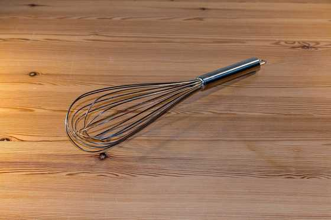
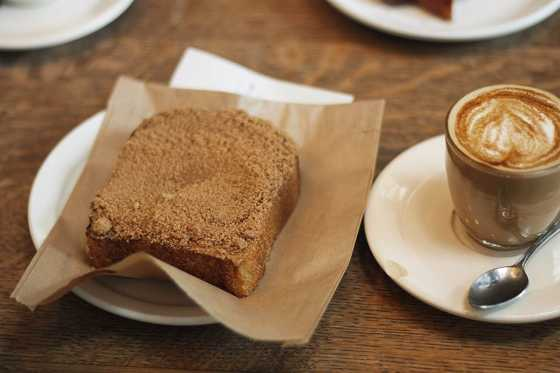
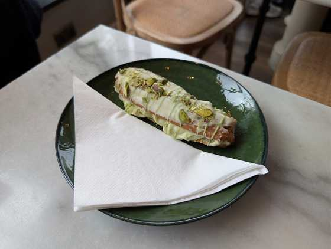

ABOUT
お店のこと
千葉県匝瑳市野手にある洋菓子店です。Instagramでは、ケーキ、チーズケーキ、シフォン、りんごのタルトやパイなどの写真が紹介されています。ハイライトには「栗仕事」があり、季節の栗のお菓子づくりも大切にされているようです。
営業はInstagramの案内では主に土曜日の午前10時ごろからで、営業日は投稿で知らせています(最新の日程は必ずInstagramでご確認ください)。
店名「ｎａｇｉ」の由来や、オーナー様の想いの詳細は公開情報で確認できていません。準備中(お聞きしたうえで掲載します)。なお「凪(穏やかな海)」のような静かな時間を思わせる、というのは制作側のイメージで、お店の公式な意味ではありません。



MENU
メニュー
Instagramで確認できる商品の種類は次のとおりです(写真はすべてフリー素材のイメージで、実際の商品ではありません)。





- 商品名・価格
- 準備中
- 予約
- 準備中
- 季節の品
- 栗を使ったお菓子など(Instagramのハイライトより。内容は準備中)



VOICE
お客様の声(イメージ例)
イメージ例
土曜の朝に寄って、焼き菓子を選ぶのが楽しみになりました。素朴でほっとする味です。
イメージ例
りんごのお菓子がやさしい甘さで、家族みんなで食べました。また買いに行きます。
イメージ例
季節ごとにお菓子が変わるのが嬉しい。Instagramで営業日を確認してから出かけています。
※上記は制作側が作成したイメージ例で、実際のお客様の声ではありません。
ACCESS
アクセス
- 住所
- 〒289-3181 千葉県匝瑳市野手1110-1
- 電話
- 準備中
- 営業時間
- 主に土曜日の午前10時ごろ〜(詳細は準備中。Instagramでご確認ください)
- 定休日
- 準備中
- @yougashi_nagi